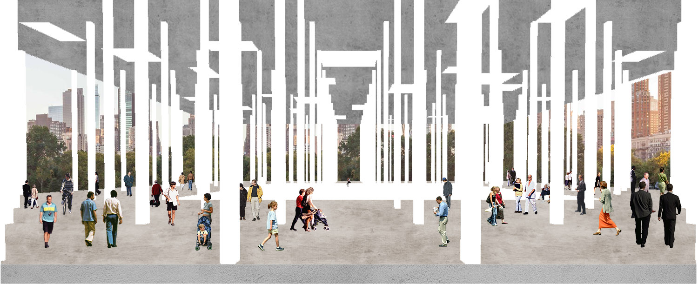
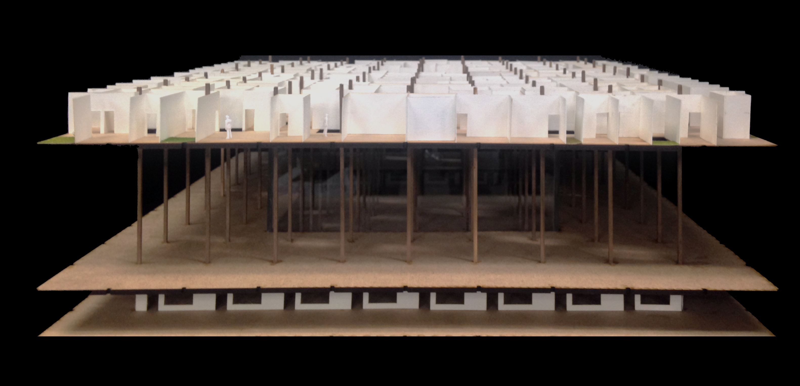
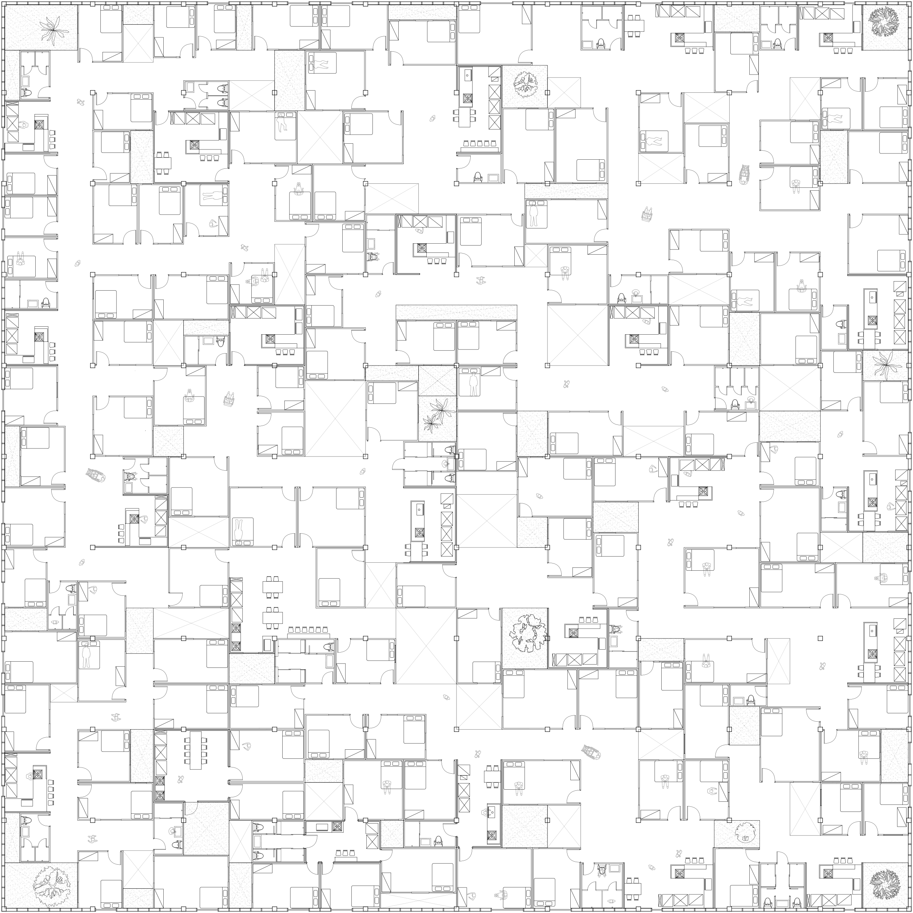

Dédale Inextricable
Proposition architecturale ascendante pour diminuer l’exclusion dans la société
Dans les années 1950, les orphelins et les clochards causés par la guerre de Corée ont été contraints de migrer en dehors de Séoul par le gouvernement. Depuis lors, ils ont été classés comme délinquants primaires potentiels et ont été complètement isolés de la société. Jusqu’en 2009, ils n’avaients pas reçu de certificat d’enregistrement. En fait, l’éducation, les soins de santé et les activités économiques sont limités. Ironiquement, cependant, la périphérie de Séoul, où il n’y avait pas de valeur dans les années 50, a doublé les prix des terres et est maintenant devenu un terrain extrêmement coûteux. Au cours des 20 dernières années, le gouvernement municipal a imposé une compensation foncière aux résidents locaux en les accusant d’occupation illégale des terres. En 2003, le gouvernement municipal a adopté une position ferme dans le but de révoquer l’occupation en changeant l’utilisation des terres sur le site public sans informer les résidents.
Bien que le bureau de quartier offre des logements locatifs comme alternative, le conflit s’est intensifié parce que les résidents n’ont pas voulu quitter leur maison où ils ont vécu pendant de nombreuses années. Ceux qui sont dans le seuil de pauvreté économique sont à peine capables de faire face aux charges économiques imposées par le style de logement locatif “top-down”.
En tant qu’alternative architecturale, il présente un programme adapté aux terres communes et suggère une méthode de développement “bottom-up” pour les habitants du territoire. La ville prévoit d’achever la construction grâce à la participation des résidents sur l’infrastructure de base à proposer.
Evasion du Dedans




